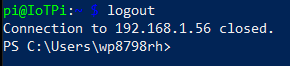

SSH-Secure SHell
These instructions will show you how to use Power Shell to run the SSH protocol and software on your laptop to connect to a single-board computer(SBC).
This software allows you to run a terminal window (CLI) on a Raspberry Pi over a network using your laptop.
This
'remote access' technology has revolutionized the way IT professionals work, allowing them to access numerous devices all over the world from their computer.
More information on Secure SHell is available online.
Being able to use this software will greatly simplify working with the Raspberry Pi, Arduino UNO and micro:bit.
After completing this assignment you will be able to:
- Run PowerShell on a Windows computer
- Establish an Secure SHell (SSH) between your Windows computer and a single-board computer
- Issue commands to the Raspberry Pi SBC from your laptop using SSH
- Update/upgrade the Raspberry Pi operating system from your laptop using SSH
This assignment reviews basic computer concepts that you will need in this course and throughout your career.
You are expected to have a working knowledge of SBC hardware and software.
If you do not understand how to use an item, perform a Google Search,
refer to the WSU Technology Knowledge Base, ask a teaching assistant, or ask the instructor.

Figure 1-Raspberry Pi 3 B+ layout
Use the Snipping Tool on your laptop to take a screenshot of the PowerShell-SSH window running cmatrix in the previous exercise.
Your screen shot will look something like this:
Figure 6-SSH Window Sample Screenshot
Save the screenshot as "IOT03" in your '
In PowerShell type logout to close the SSH connection to the Raspberry Pi.

Figure 7- Close RPi Connection
(70) 1. Upload your screenshot to the 'IOT03' D2L Assignment Folder.